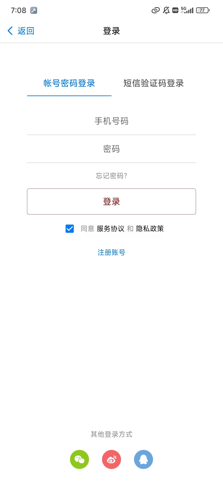
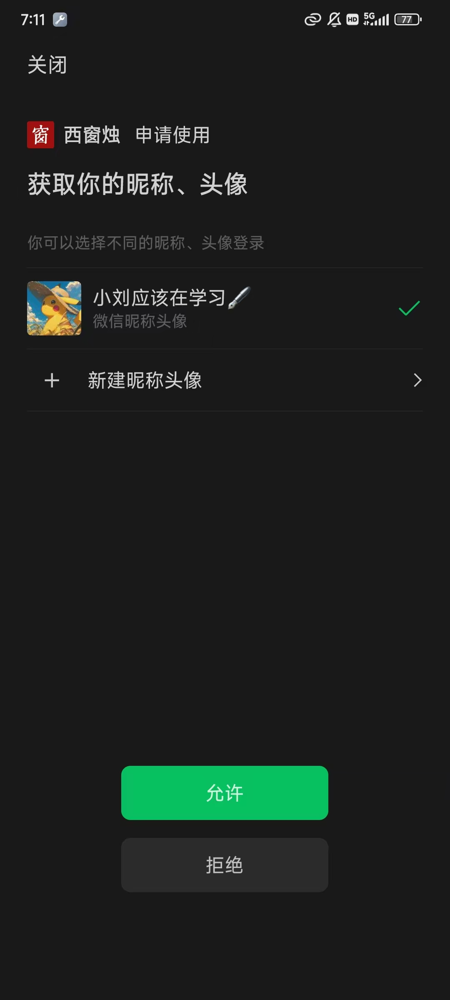
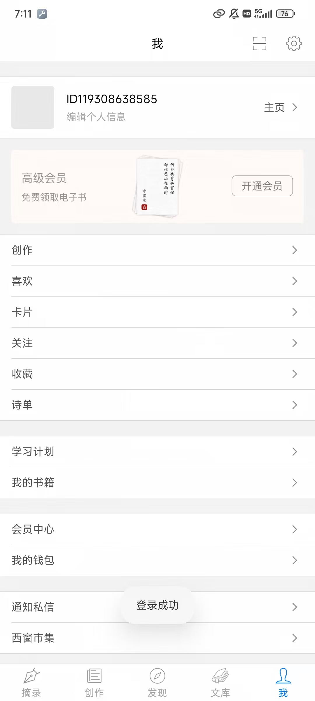
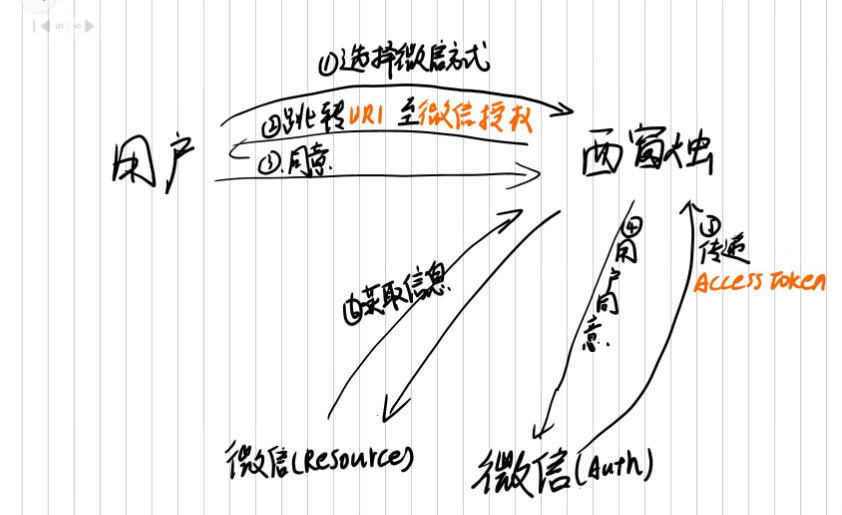
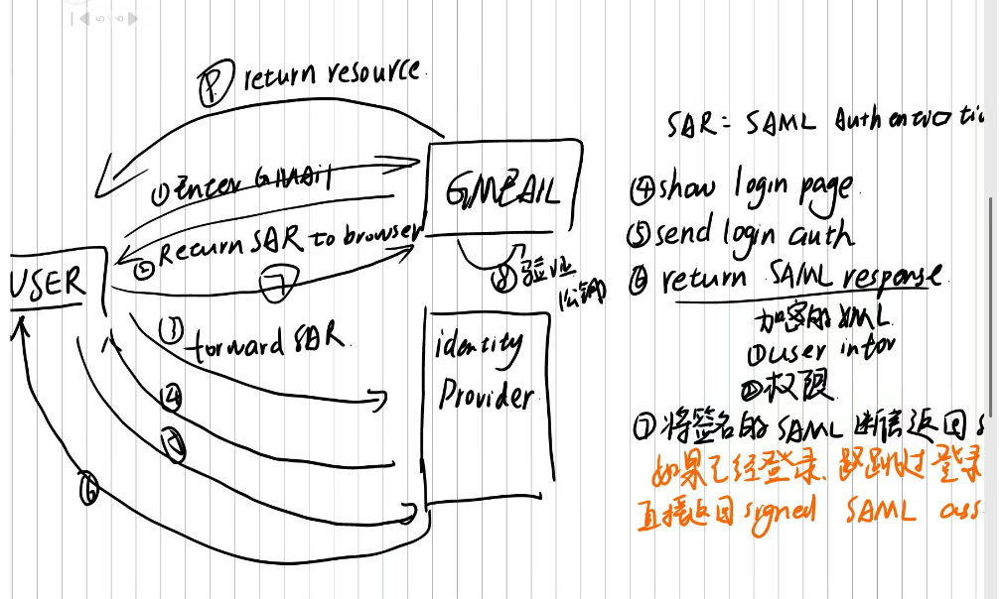

OAuth2.0与SSO：打造一个属于懒蛋的世界
试想一下，你是一个懒蛋，
你不想记住各种各样的账号密码，
你不想在各种网站上注册账号，
你只想使用一个账号密码，
然后就可以访问所有的网站，
这个时候，OAuth2.0和SSO就是你的救星。
OAuth2.0

请看上图的最下方，有许多用其他方式登录的选项，这就是OAuth2的应用场景
点击微信登录之后


那么，西窗烛是怎么和微信的用户信息进行关联的呢？

第一步，用户登录时需要选择登录方式，西窗烛确认用户登录方式后，返回一个uri跳转到对应的授权界面
第二步，用户选择对应的登录用户，同意授权
第三步，西窗烛告诉微信 “用户要使用你的资源，快给我” ，微信Auth服务返回一个Access Token给西窗烛
最后一步，西窗烛 使用Access Token向微信（Resource）资源服务请求对应用户的信息
大概流程就是这样，我们下期再见…
等等！你也发现了，上面的流程漏洞百出对不对？
别急，我已经预判到了你的想法，让我们慢慢讲
西窗烛告诉微信要资源他就给，万一是一个恶意软件呢？
首先，能够实现微信登录的应用都是经过微信审核认证通过的，
微信会给审核通过的应用一个Secret Id 和Secret Key，
应用索要用户信息时需要携带这两个键，用于告诉微信 “是谁在向你要信息”
就像是一个房子，只有拥有钥匙的客人才能够进去使用
如果是一个伪装成好的软件的恶意软件，用户没同意也说他同意了怎么办 ？
这也不需要着急，还记得我们说的第一步吗，
西窗烛返回一个uri，然后用户的会跳转到对应uri的界面，在这里是微信界面，
事实上，此时，用户就已经进入到微信所能掌控的领域了，而并不是西窗烛，
用户根据微信提供的授权界面进行授权
换句话说，这个操作是在 _微信_ 进行的！
好好好算你厉害，最后一个问题，应用如果使用Access Token随意获取用户信息怎么办（冷笑）？
你先冷静，我猜你的问题是
应用申请完一个用户的Access Token，但是用这个用户的Access Token请求其他用户的信息怎么办，对不对？
这位同志，我建议你先去看一下JWT，Token中是包含目标用户id、以及有效时间的
不仅能够防止不同用户的Access Token隔离
也能防止一个Access Token请求多次
既然这位同志没有问题了，那么我们开始介绍SSO单点登录
SSO单点登录
SSO单点登录，是指用户只需要登录一次（通过一个专门的服务提供商），就可以访问所有的应用，而不需要再次登录
那有人就会问了，这不就是OAuth2吗？
还是那句话：别急，我们往下看!
还是那句话，先上图！

很乱，看不懂，对吧？我们慢慢来
首先我们设想现在有一个用户，叫user1，然后服务提供商叫做identity provider，有两个应用，分别叫做app1和app2
用户登陆时，
- 用户访问app1，app1发现用户没有登录，返回一个SAR（Service Authorization Request）给浏览器
- 用户根据返回的SAR，跳转到SAR指定的identity provider的登录界面
- identity provider给用户展示一个登录界面，用户正常登录
- 用户登录之后，identity provider返回一个SAML给用户
- 用户拿着SAML，跳转到app1的界面，app1进行验证（公钥私钥）
- 验证通过，app1允许用户登录
这里面有几个专业名词，稍微解释一下:
SAML：Security Assertion Markup Language，安全断言标记语言，是一种基于XML的标准，用于在不同的安全域之间传递身份验证和授权数据
简单的来说，在这个场景中，就是一个包含有用户信息的、加密的XML文件SAR：SAML Authorization Request, SAML授权请求
identity provider：身份提供商，负责用户的认证和授权
当用户第二次登录时：
- 用户访问app2, app2也会返回一个SAR给浏览器
- 浏览器根据SAR跳转到identity provider的登录界面，此时，identity provider会发现用户已经登录过了，直接返回SAML给用户
- 用户拿着SAML，跳转到app2的界面，app2进行验证
这就是SSO单点登录的大致流程，当然，实际上，还有很多细节需要处理，比如SAML的加密解密，SAML的有效时间等等
OAuth2.0与SSO的区别
简单的来说， OAuth2.0是一种授权协议，SSO是一种登录方式
OAuth2主要用于不同团体的应用，而SSO主要用于同一个团体，比如公司内部的应用
- OAuth2主要用于授权一些平台账号的资源，比如头像、用户名之类的，“平台”有自己专门的功能，
- SSO主要用于公司内部的应用，而identity provider就是公司的统一认证中心，专门负责用户的认证和授权
Casdoor：一个开源的SSO单点登录系统，可以用于公司内部的应用